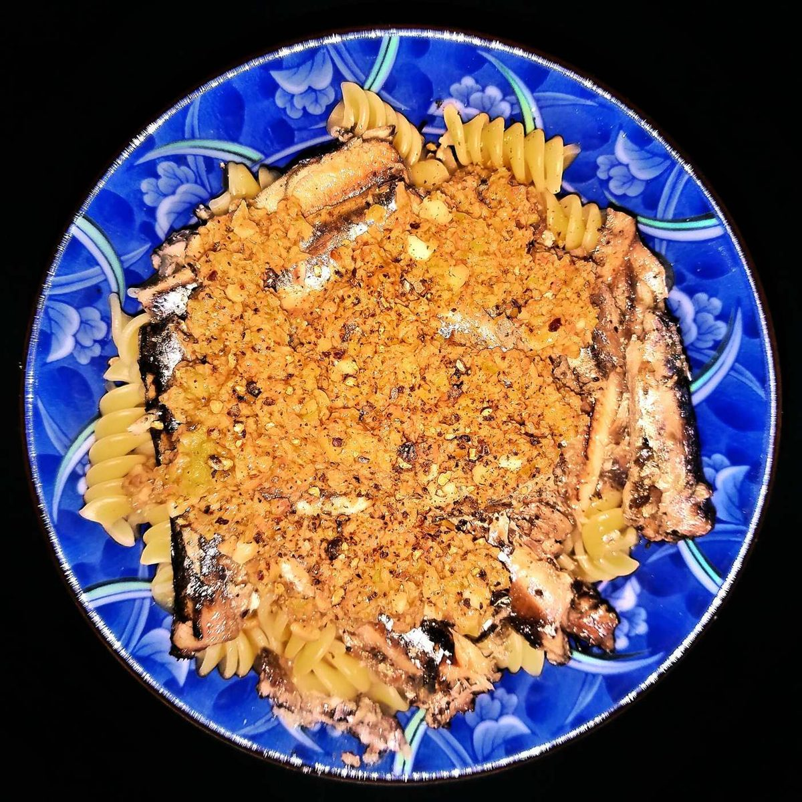
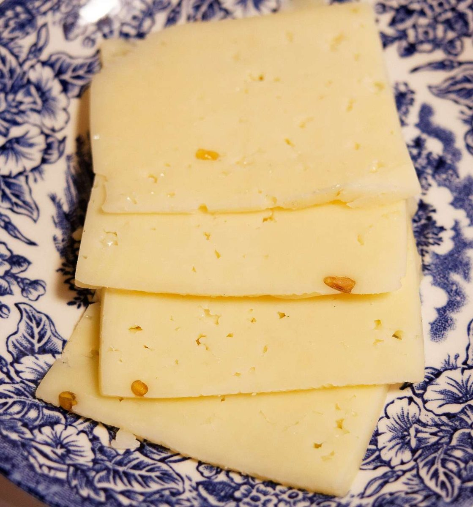
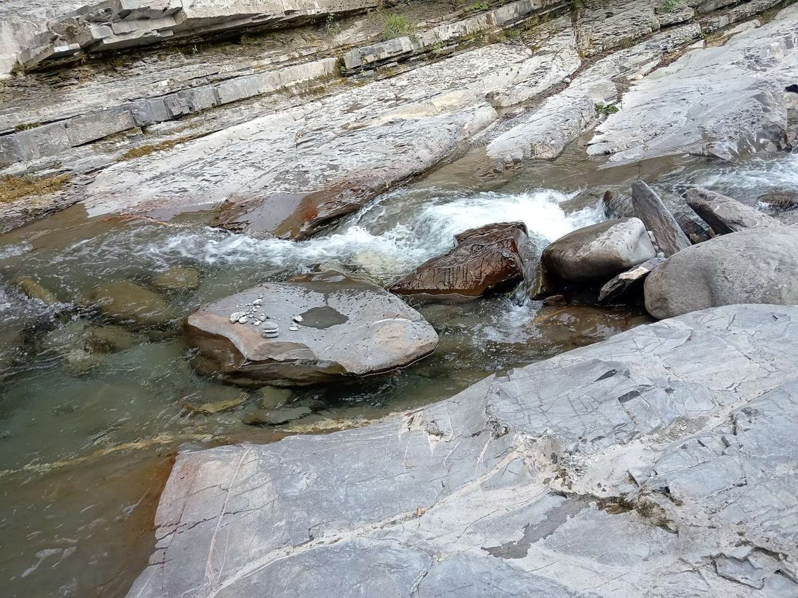
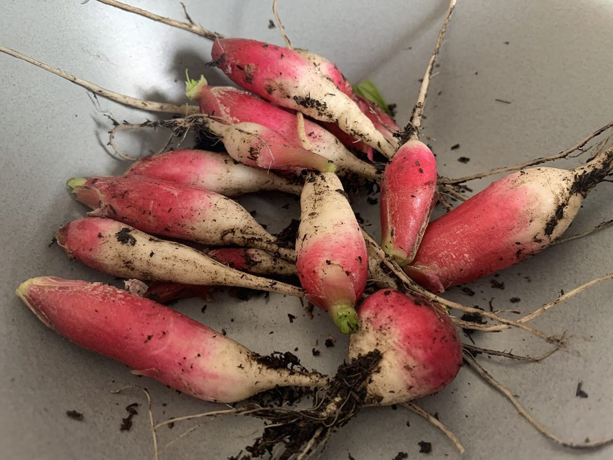
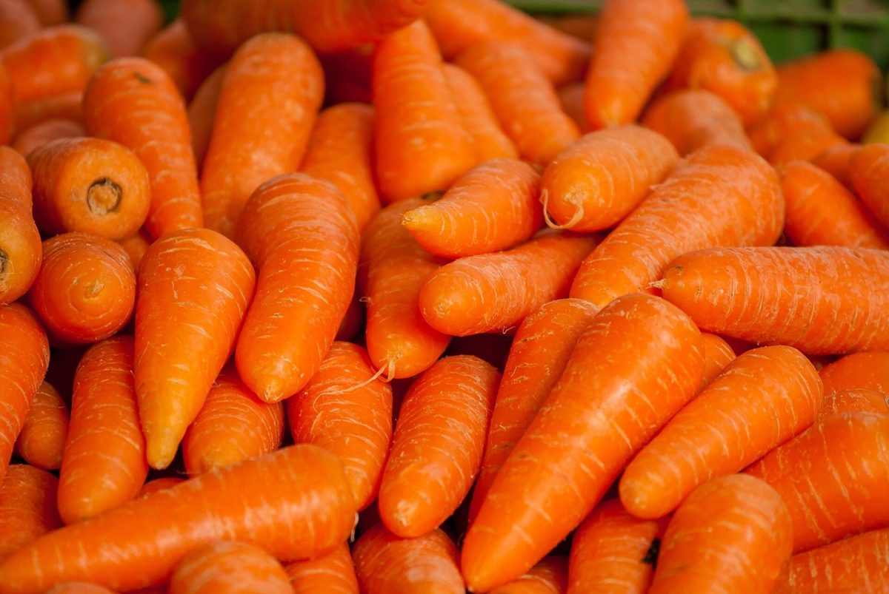

東濃食材のカレー
東濃産の食材を使ったルーのカレー。お好みの美濃焼の皿を選んで盛り付けてもらえます。


お店のこと
irodori cafe(イロドリカフェ)は、土岐市のテラスゲート土岐(「もとてらす東美濃」「まちゆい」の館内)にある、2024年4月30日オープンのカフェです。土岐市肥田町のイタリアンレストラン「Toki Italian SAI」が手がける店で、「東濃の魅力を体感できる」カフェとして紹介されています。
メインは東濃の食材を使ったカレー。各蔵元・作家の美濃焼の皿から好みの一枚を選ぶと、スタッフが盛り付けてくれるという、器も楽しめる趣向です。ティータイムには、多治見市「コンパス」の紅茶や、土岐市駄知町「多々楽達屋」のドライフルーツを使ったフルーツティーなどが紹介されています。
食事やデザートはレストランが監修し、パティシエによるデザートも並ぶとのこと。テラス席があり、約10名からの貸し切りにも対応していると案内されています。
※店名「irodori」の意味は確認できていません。このページの配色(織部の緑、柿、藍など)は、美濃焼の器と東濃の食材から着想した制作側のイメージです。




メニュー
紹介記事で確認できた内容のみです。品目・価格・提供時間の詳細は準備中です。
東濃産の食材を使ったルーのカレー。お好みの美濃焼の皿を選んで盛り付けてもらえます。

レストランのパティシエによるデザートを常時販売とのことです。

紅茶やフルーツティー。駄知町のドライフルーツを使ったものが紹介されています。

2025年8月から、終日注文できるモーニングが始まったと案内されています。



| 営業時間 | 準備中 |
|---|---|
| 定休日 | 準備中 |
| 価格 | 準備中 |
口コミ
以下は制作側が作成したイメージ例で、実在のお客様の声ではありません。
イメージ例お皿を選ぶところから楽しくて、食べる前から気分が上がりました。
イメージ例地元の食材だと聞くと、ひと口ごとに味わいたくなります。
イメージ例テラスでお茶を飲んで、ゆっくりできました。